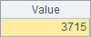
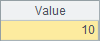
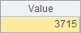
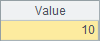

1.7.1 esProc function options
Many functions in esProc can use function options with which the same function can have various work patterns. The basic format of function options is f@o(¡) in which o is f function¡¯s option. For example:
|
|
A |
B |
|
1 |
2004-5-5 |
2014-7-7 |
|
2 |
=interval(A1,B1) |
|
|
3 |
=interval@y(A1,B1) |
|
|
4 |
=interval@m(A1,B1) |
|
We use interval function to compute the number of days between two dates. In expressions in A3 and A4, @y and @m are interval function¡¯s options. With these options, the function will use the year and the month as computational units in computing the interval between dates. Function options empower a function to meet multiple needs by extending its functionality, slim down the function library and avoid using too many function parameters. The number of days, years and months between the two dates are computed respectively in A2, A3 and A4, as shown below:
  
 